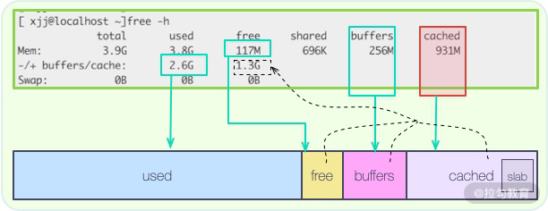

- 00 Java 性能优化，是进阶高级架构师的炼金石.md.html
- 01 理论分析：性能优化，有哪些衡量指标？需要注意什么？.md.html
- 02 理论分析：性能优化有章可循，谈谈常用的切入点.md.html
- 03 深入剖析：哪些资源，容易成为瓶颈？.md.html
- 04 工具实践：如何获取代码性能数据？.md.html
- 05 工具实践：基准测试 JMH，精确测量方法性能.md.html
- 06 案例分析：缓冲区如何让代码加速.md.html
- 07 案例分析：无处不在的缓存，高并发系统的法宝.md.html
- 08 案例分析：Redis 如何助力秒杀业务.md.html
- 09 案例分析：池化对象的应用场景.md.html
- 10 案例分析：大对象复用的目标和注意点.md.html
- 11 案例分析：如何用设计模式优化性能.md.html
- 12 案例分析：并行计算让代码“飞”起来.md.html
- 13 案例分析：多线程锁的优化.md.html
- 14 案例分析：乐观锁和无锁.md.html
- 15 案例分析：从 BIO 到 NIO，再到 AIO.md.html
- 16 案例分析：常见 Java 代码优化法则.md.html
- 17 高级进阶：JVM 如何完成垃圾回收？.md.html
- 18 高级进阶：JIT 如何影响 JVM 的性能？.md.html
- 19 高级进阶：JVM 常见优化参数.md.html
- 20 SpringBoot 服务性能优化.md.html
- 21 性能优化的过程方法与求职面经总结.md.html
- 22 结束语 实践出真知.md.html
- 捐赠
07 案例分析：无处不在的缓存，高并发系统的法宝
在上一课时，我们介绍了“缓冲”，这一课时我将介绍“缓冲”的孪生兄弟“缓存”。
和缓冲类似，缓存可能是软件中使用最多的优化技术了，比如：在最核心的 CPU 中，就存在着多级缓存；为了消除内存和存储之间的差异，各种类似 Redis 的缓存框架更是层出不穷。
缓存的优化效果是非常好的，它既可以让原本载入非常缓慢的页面，瞬间秒开，也能让本是压力山大的数据库，瞬间清闲下来。
缓存，本质上是为了协调两个速度差异非常大的组件，如下图所示，通过加入一个中间层，将常用的数据存放在相对高速的设备中。

在我们平常的应用开发中，根据缓存所处的物理位置，一般分为进程内缓存和进程外缓存。
本课时我们主要聚焦在进程内缓存上，在 Java 中，进程内缓存，就是我们常说的堆内缓存。Spring 的默认实现里，就包含 Ehcache、JCache、Caffeine、Guava Cache 等。
Guava 的 LoadingCache
Guava 是一个常用的工具包，其中的 LoadingCache（下面简称 LC），是非常好用的堆内缓存工具。通过学习 LC 的结构，即可了解堆内缓存设计的一般思路。
缓存一般是比较昂贵的组件，容量是有限制的，设置得过小，或者过大，都会影响缓存性能：
- 缓存空间过小，就会造成高命中率的元素被频繁移出，失去了缓存的意义；
- 缓存空间过大，不仅浪费宝贵的缓存资源，还会对垃圾回收产生一定的压力。
通过 Maven，即可引入 guava 的 jar 包：
<dependency>
<groupId>com.google.guava</groupId>
<artifactId>guava</artifactId>
<version>29.0-jre</version>
</dependency>
下面介绍一下 LC 的常用操作：
1.缓存初始化
首先，我们可以通过下面的参数设置一下 LC 的大小。一般，我们只需给缓存提供一个上限。
- maximumSize 这个参数用来设置缓存池的最大容量，达到此容量将会清理其他元素；
- initialCapacity 默认值是 16，表示初始化大小；
- concurrencyLevel 默认值是 4，和初始化大小配合使用，表示会将缓存的内存划分成 4 个 segment，用来支持高并发的存取。
2.缓存操作
那么缓存数据是怎么放进去的呢？有两种模式：
- 使用 put 方法手动处理，比如，我从数据库里查询出一个 User 对象，然后手动调用代码进去；
- 主动触发（ 这也是 Loading 这个词的由来），通过提供一个 CacheLoader 的实现，就可以在用到这个对象的时候，进行延迟加载。
public static void main(String[] args) {
LoadingCache<String, String> lc = CacheBuilder
.newBuilder()
.build(new CacheLoader<String, String>() {
@Override
public String load(String key) throws Exception {
return slowMethod(key);
}
});
}
static String slowMethod(String key) throws Exception {
Thread.sleep(1000);
return key + ".result";
}
上面是主动触发的示例代码，你可以使用 get 方法获取缓存的值。比如，当我们执行 lc.get(“a”) 时，第一次会比较缓慢，因为它需要到数据源进行获取；第二次就瞬间返回了，也就是缓存命中了。具体时序可以参见下面这张图。

除了靠 LC 自带的回收策略，我们也可以手动删除某一个元素，这就是 invalidate 方法。当然，数据的这些删除操作，也是可以监听到的，只需要设置一个监听器就可以了，代码如下：
.removalListener(notification -> System.out.println(notification))
3.回收策略
缓存的大小是有限的，满了以后怎么办？这就需要回收策略进行处理，接下来我会向你介绍三种回收策略。
（1）第一种回收策略基于容量
这个比较好理解，也就是说如果缓存满了，就会按照 LRU 算法来移除其他元素。
（2）第二种回收策略基于时间
- 一种方式是，通过 expireAfterWrite 方法设置数据写入以后在某个时间失效；
- 另一种是，通过 expireAfterAccess 方法设置最早访问的元素，并优先将其删除。
（3）第三种回收策略基于 JVM 的垃圾回收
我们都知道对象的引用有强、软、弱、虚等四个级别，通过 weakKeys 等函数即可设置相应的引用级别。当 JVM 垃圾回收的时候，会主动清理这些数据。
关于第三种回收策略，有一个高频面试题：如果你同时设置了 weakKeys 和 weakValues函数，LC 会有什么反应？
答案：如果同时设置了这两个函数，它代表的意思是，当没有任何强引用，与 key 或者 value 有关系时，就删掉整个缓存项。这两个函数经常被误解。
4.缓存造成内存故障
LC 可以通过 recordStats 函数，对缓存加载和命中率等情况进行监控。
值得注意的是：LC 是基于数据条数而不是基于缓存物理大小的，所以如果你缓存的对象特别大，就会造成不可预料的内存占用。
围绕这点，我分享一个由于不正确使用缓存导致的常见内存故障。
大多数堆内缓存，都会将对象的引用设置成弱引用或软引用，这样内存不足时，可以优先释放缓存占用的空间，给其他对象腾出地方。这种做法的初衷是好的，但容易出现问题。
当你的缓存使用非常频繁，数据量又比较大的情况下，缓存会占用大量内存，如果此时发生了垃圾回收（GC），缓存空间会被释放掉，但又被迅速占满，从而会再次触发垃圾回收。如此往返，GC 线程会耗费大量的 CPU 资源，缓存也就失去了它的意义。
所以在这种情况下，把缓存设置的小一些，减轻 JVM 的负担，是一个很好的方法。
缓存算法
1.算法介绍
堆内缓存最常用的有 FIFO、LRU、LFU 这三种算法。
- FIFO
这是一种先进先出的模式。如果缓存容量满了，将会移除最先加入的元素。这种缓存实现方式简单，但符合先进先出的队列模式场景的功能不多，应用场景较少。
- LRU
LRU 是最近最少使用的意思，当缓存容量达到上限，它会优先移除那些最久未被使用的数据，LRU是目前最常用的缓存算法，稍后我们会使用 Java 的 API 简单实现一个。
- LFU
LFU 是最近最不常用的意思。相对于 LRU 的时间维度，LFU 增加了访问次数的维度。如果缓存满的时候，将优先移除访问次数最少的元素；而当有多个访问次数相同的元素时，则优先移除最久未被使用的元素。
2.实现一个 LRU 算法
Java 里面实现 LRU 算法可以有多种方式，其中最常用的就是 LinkedHashMap，这也是一个需要你注意的面试高频考点。
首先，我们来看一下 LinkedHashMap 的构造方法：
public LinkedHashMap(int initialCapacity,
float loadFactor,
boolean accessOrder)
accessOrder 参数是实现 LRU 的关键。当 accessOrder 的值为 true 时，将按照对象的访问顺序排序；当 accessOrder 的值为 false 时，将按照对象的插入顺序排序。我们上面提到过，按照访问顺序排序，其实就是 LRU。

如上图，按照缓存的一般设计方式，和 LC 类似，当你向 LinkedHashMap 中添加新对象的时候，就会调用 removeEldestEntry 方法。这个方法默认返回 false，表示永不过期。我们只需要覆盖这个方法，当超出容量的时候返回 true，触发移除动作就可以了。关键代码如下：
public class LRU extends LinkedHashMap {
int capacity;
public LRU(int capacity) {
super(16, 0.75f, true);
this.capacity = capacity;
}
@Override
protected boolean removeEldestEntry(Map.Entry eldest) {
return size() > capacity;
}
}
相比较 LC，这段代码实现的功能是比较简陋的，它甚至不是线程安全的，但它体现了缓存设计的一般思路，是 Java 中最简单的 LRU 实现方式。
进一步加速
在 Linux 系统中，通过 free 命令，能够看到系统内存的使用状态。其中，有一块叫作 cached 的区域，占用了大量的内存空间。

如图所示，这个区域，其实就是存放了操作系统的文件缓存，当应用再次用到它的时候，就不用再到磁盘里走一圈，能够从内存里快速载入。
在文件读取的缓存方面，操作系统做得更多。由于磁盘擅长顺序读写，在随机读写的时候，效率很低，所以，操作系统使用了智能的预读算法（readahead），将数据从硬盘中加载到缓存中。
预读算法有三个关键点：
- 预测性，能够根据应用的使用数据，提前预测应用后续的操作目标；
- 提前，能够将这些数据提前加载到缓存中，保证命中率；
- 批量，将小块的、频繁的读取操作，合并成顺序的批量读取，提高性能。
预读技术一般都是比较智能的，能够覆盖大多数后续的读取操作。举个极端的例子，如果我们的数据集合比较小，访问频率又非常高，就可以使用完全载入的方式，来替换懒加载的方式。在系统启动的时候，将数据加载到缓存中。
缓存优化的一般思路
一般，缓存针对的主要是读操作。当你的功能遇到下面的场景时，就可以选择使用缓存组件进行性能优化：
- 存在数据热点，缓存的数据能够被频繁使用；
- 读操作明显比写操作要多；
- 下游功能存在着比较悬殊的性能差异，下游服务能力有限；
- 加入缓存以后，不会影响程序的正确性，或者引入不可预料的复杂性。
缓存组件和缓冲类似，也是在两个组件速度严重不匹配的时候，引入的一个中间层，但它们服务的目标是不同的：
- 缓冲，数据一般只使用一次，等待缓冲区满了，就执行 flush 操作；
- 缓存，数据被载入之后，可以多次使用，数据将会共享多次。
缓存最重要的指标就是命中率，有以下几个因素会影响命中率。
（1）缓存容量
缓存的容量总是有限制的，所以就存在一些冷数据的逐出问题。但缓存也不是越大越好，它不能明显挤占业务的内存。
（2）数据集类型
如果缓存的数据是非热点数据，或者是操作几次就不再使用的冷数据，那命中率肯定会低，缓存也会失去了它的作用。
（3）缓存失效策略
缓存算法也会影响命中率和性能，目前效率最高的算法是 Caffeine 使用的 W-TinyLFU 算法，它的命中率非常高，内存占用也更小。新版本的 spring-cache，已经默认支持 Caffeine。
下图展示了这个算法的性能，从官网的 github 仓库就可以找到 JMH 的测试代码。

推荐使用 Guava Cache 或者 Caffeine 作为堆内缓存解决方案，然后通过它们提供的一系列监控指标，来调整缓存的大小和内容，一般来说：
- 缓存命中率达到 50% 以上，作用就开始变得显著；
- 缓存命中率低于 10%，那就需要考虑缓存组件的必要性了。
引入缓存组件，能够显著提升系统性能，但也会引入新的问题。其中，最典型的也是面试高频问题：如何保证缓存与源数据的同步？关于这点，我们会在下一课时进行讲解。
小结
最后，我来总结一下本课时的知识要点。
我们先以 Guava 的 LoadingCache 为例，讲解了堆内缓存设计的一些思路；同时，介绍了一个因为缓存不合理利用所造成的内存故障，这些都是面试中的高频问题；然后又讲解了，三个常用的缓存算法 LRU、LFU、FIFO，并以 LinkedHashMap 为基础，实现了一个最简单的 LRU 缓存。
本课时还提到了使用预读或者提前载入等方式，来进一步加速应用的方法，readahead技术，在操作系统、数据库中使用非常多，性能提升也比较显著。
最后，我们提到可以通过利用缓存框架的一些监控数据，来调整缓存的命中率，要达到50% 的命中率才算有较好的效果。
接下来，我再简单举两个缓存应用的例子。
- 第一个是 HTTP 304 状态码，它是 Not Modified 的意思。 浏览器客户端会发送一个条件性的请求，服务端可以通过 If-Modified-Since 头信息判断缓冲的文件是否是最新的。如果是，那么客户端就直接使用缓存，不用进行再读取了。
- 另一个是关于 CDN，这是一种变相的缓存。 用户会从离它最近最快的节点，读取文件内容。如果这个节点没有缓存这个文件，那么 CDN 节点就会从源站拉取一份，下次有相同的读取请求时，就可以快速返回。
缓存的应用非常广泛，大家在平常的工作中，也可以尝试进行总结、类比。
© 2019 - 2023 Liangliang Lee. Powered by gin and hexo-theme-book.